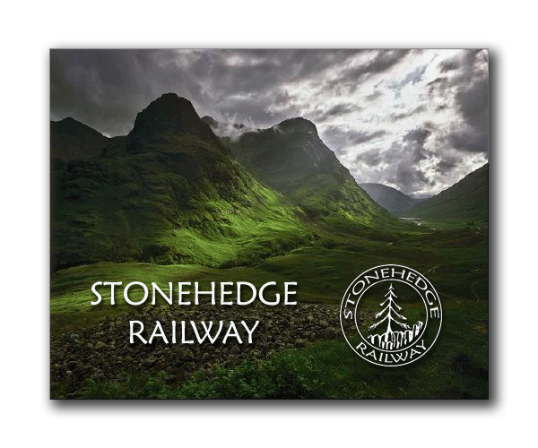

|  2011 - Year
Two -
a delay
begins..
The garden railroad began a major delay for 2011, in only its second year of construction, a classic case of "life gets in the way." I have been working at Kodak for 16 years..the odds of being laid off from Kodak have always been high for the past decade, as digital photography slowly kills off film and photo paper, but by 2011 things have become dire for the "Big Yellow Box", and my time is probably finally coming..it's likely I will be laid off in 2011. With such uncertainty, there is little sense in doing more work on the garden railroad, because we dont even know if we will still be living here in another year or two..therefore the garden railroad is put on hold, and no work at all was done in 2011..only two videos for 2011, and no photos! :( March 17, 2011 - I hadn't yet received the layoff news: September
1, 2011:
|
||